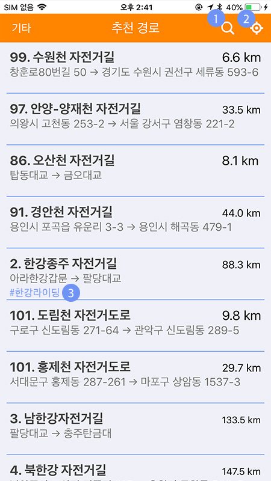
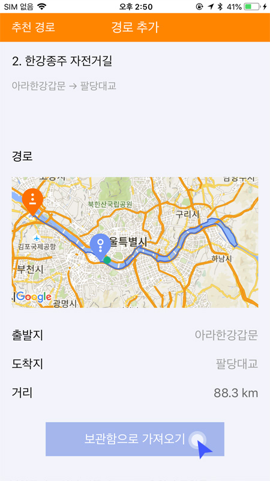
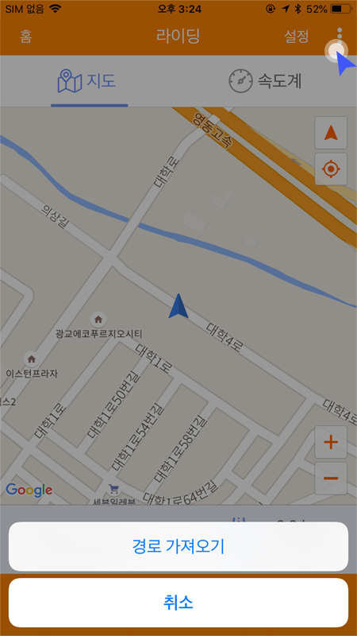

* 추천경로의 목록은 자사에서 엄선한 라이딩 경로 입니다.
* 추천경로 메뉴는 원하는 경로를 경로보관함에 저장하고 라이딩시 경로를 가져와서 표시된 경로를 따라 라이딩 하는 기능입니다.
‘경로 보관함' 메뉴를 통해서 경로 보관함 목록으로 이동합니다.
목록에서 경로를 클릭하면 상세정보를 볼 수 있습니다.
① 키워드 검색: 해당 버튼으로 키워드를 입력하여 경로를 검색할 수 있습니다. ② 위치 검색: 해당 버튼을 클릭하면 현재 자신의 위치를 조회하여 가까운 순으로 경로가 검색 됩니다. ③ 태그 검색: 해당 태그를 클릭하면 같은 태그가 포함된 경로를 검색합니다.
페이지 하단에 ‘보관함으로 가져오기'를 클릭하면 자신의 ‘경로 보관함'으로 이동되고 보관함 목록에서 확인할 수 있습니다.
경로보관함에 저장한 추천 경로는 라이딩을 시작할때 경로 가져오기 메뉴로 불러와서 라이딩 합니다.